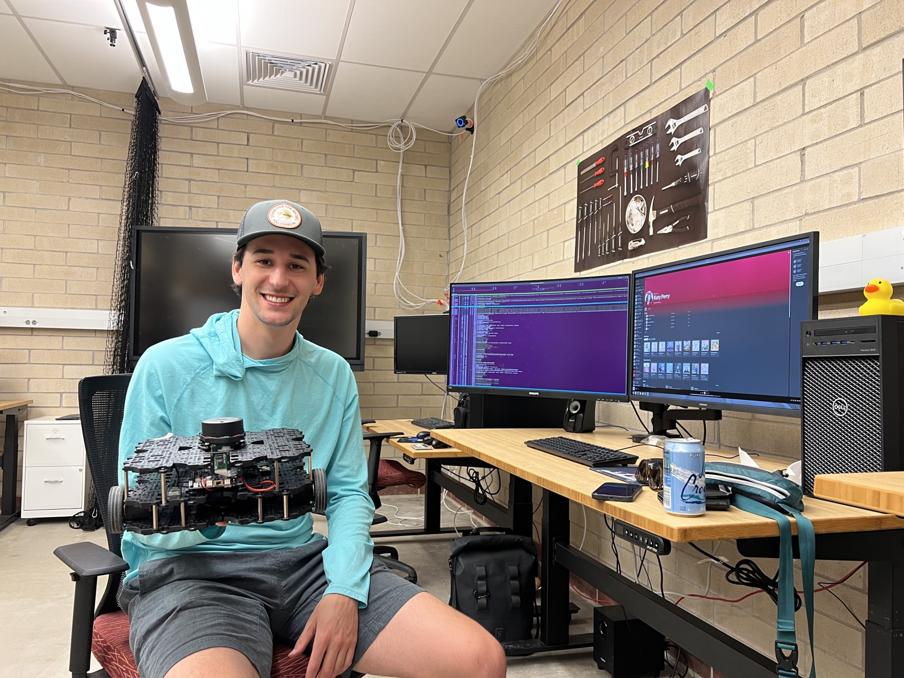
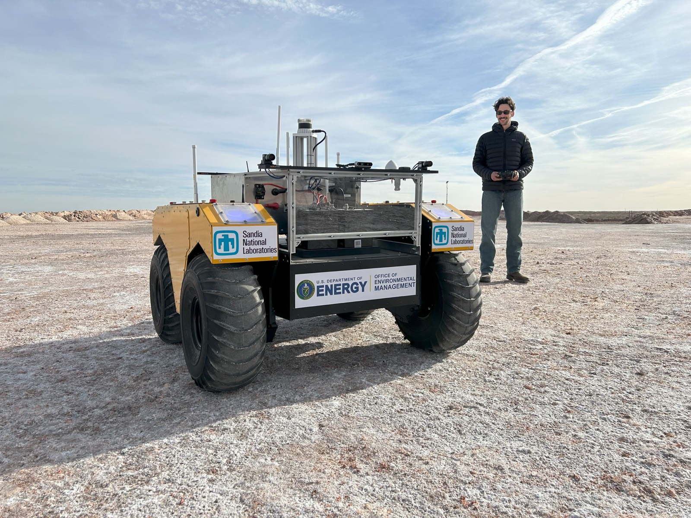
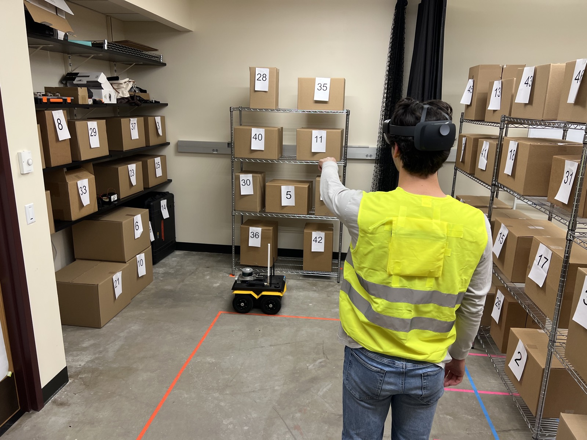

Ori Miller
Autonomy & Counter-Autonomy Researcher at Sandia National Laboratories, specializing in multi-agent robotics, reinforcement learning, and computer vision.
Albuquerque, New Mexico
Autonomy & Counter-Autonomy Researcher at Sandia National Laboratories, specializing in multi-agent robotics, reinforcement learning, and computer vision.
About
Originally from St. Louis, Missouri. I hold an MS in Computer Science (Robotics) and a BS in Computer Science from the University of Denver, where I spent three years as a Research Assistant in the ARISE Lab under Dr. Christopher Reardon. I now work at Sandia National Laboratories as an Autonomy & Counter-Autonomy Researcher, focusing on autonomous testing, physical security evaluation, and adversarial robotics.



Experience
Sandia National Laboratories — Albuquerque, NM
University of Denver — ARISE Lab
U.S. Army DEVCOM Army Research Laboratory — Adelphi, MD
University of Denver — ARISE Lab
Trimble Inc. — Westminster, CO
Centene Corporation — St. Louis, MO

Education
University of Denver — Ritchie School of Engineering & Computer Science
University of Denver
Minors in Entrepreneurship Management and Mathematics
Publications
A plain-English, visual walkthrough of my MS research — two robots, one person to follow, and a bake-off between forecasting and reinforcement learning.
Ori A. Miller, Jason M. Gregory, Christopher Reardon · IEEE SSRR · November 2024
Christopher Reardon, Jason M. Gregory, Kerstin S. Haring, Benjamin Dossett, Ori A. Miller, Aniekan Inyang · ACM Transactions on Human-Robot Interaction (THRI) · 2023
Ori A. Miller, Christopher Reardon, Jason M. Gregory · Heterogeneity in Multi-Robot Systems Workshop, ICRA · London, UK · May 2023
Ori A. Miller, Christopher Reardon · Heterogeneous Multi-Robot Cooperation in Extreme Environments Workshop, ICRA · London, UK · May 2023